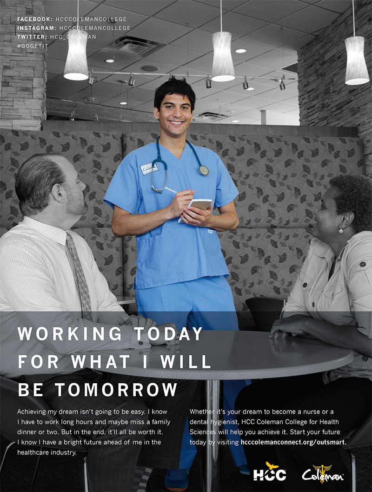
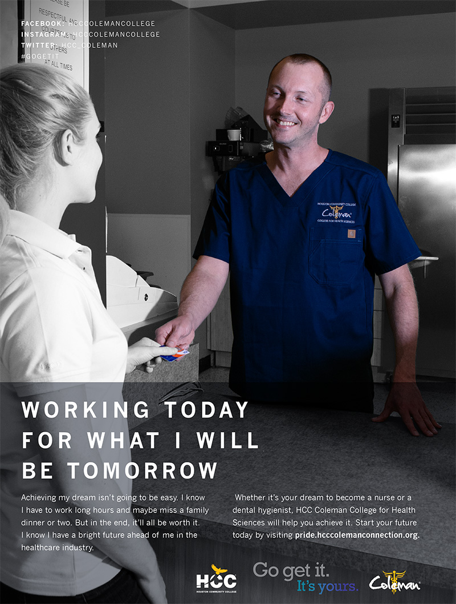

HCC Coleman's Outsmart Magazine Campaign
The following advertisements were published in Outsmart Magazine in 2014.
These ads focus on the hard work and dedication that goes into becoming a successful student at HCC Coleman College. To become the best nurse, radiographer or dental hygienist a student can be, he or she will have to miss out on time with friends and family, they’ll have to work hard in the classroom and in the laboratory. And for many of our students, they’ll have to do all of this while working a job as a waiter, a cashier or some other job. These ads reflect that dedication and sacrifice.
In addition to developing the concept with the Public Relations Director and Graphic Designer, I wrote the headlines and copy and took the photographs.
 